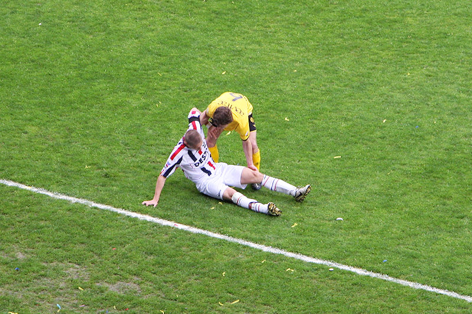
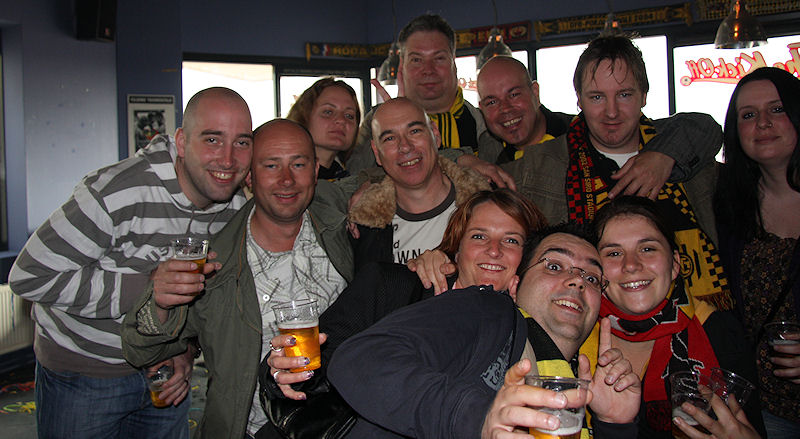

Vlaggetjesdag bij Willem II, het met afstand meest irritante publiek in het
PLS.
Redding doelman Aerts op de lijn.
Vrije trap Messoudi opgeruimd door De Jong.
Roda sterft in de kansen maar een club zonder spitsen scoort nooit....
Meug tuup (on request)
En alweer niet....

Meeuwis helpt een van de stervende zwanen op.
Van Veldhoven maakt zich weer belachelijk door Vormer te vervangen door
Sutchuin. Eerder werd Oper noodgedwongen vervangen door
de man van glas Van Tornhout die na enkele minuten zijn naam eer aan deed en
vervangen werd door tweede elftal speler Wesley Schors.
In de slotfase krijgt Willem II enkele superkansen op een onverdiende
treffer.
Hier is het alsnog raak door een buitenspeldoelpunt van Vorthoren: 0-1,
(92').
Bube and babes maken reclame voor Fotser Rock.

Ondanks alle ellende was het nog aardig gezellig in de Kickoff.
Meisje midden... mail even naar
koempel@koempel.nl